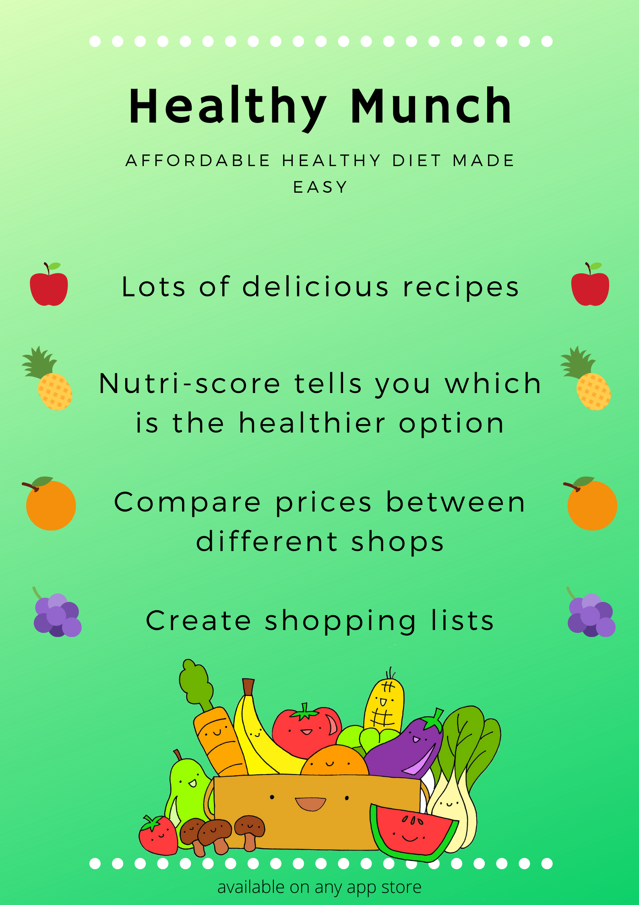

Our poster
Our poster aims to catch people's eye with fun. We used a green background as studies have shown that green produced a calming sense of stability and reliability while also making the audience think of health. We used pictures of fruit, including pineapple (yellow) or orange (orange), colours that have an energetic feel and grab the attention. This brings the viewer's attention to our app's selling points. We also used a fun picture of happy fruit as this reinforces our healthy and fun image.
We used various fonts and sizes to highlight certain aspects, for example, we put our app name in big font to aid memory. We put all text in the middle of our poster as when people speed read things, this is where their focus lies. We did these things, fonts, sizing and middle text so that people with bad sight can see it clearly and people can understand it from a distance. We ensured that we kept our poster short and to the point as people give posters only mere seconds of their attention during their busy day so you have to make an impact.